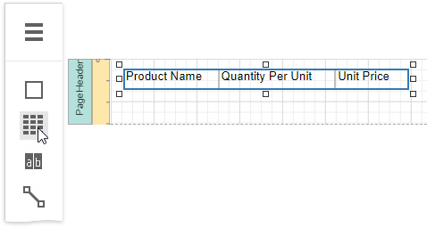
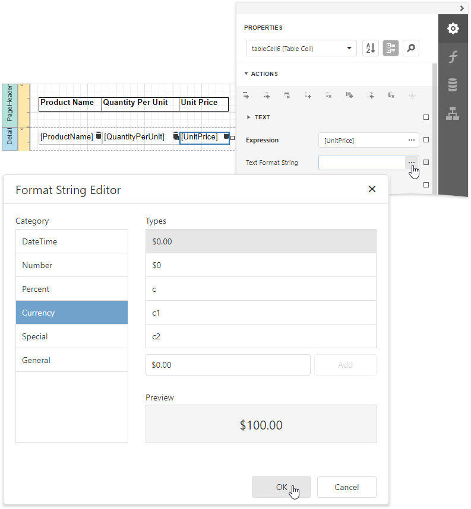

Table Reports
This tutorial describes how to create a data-bound report displaying information in a tabular format. Table reports should not be confused with hierarchical master-detail reports, nor with cross-tab reports.

Bind the report to a required data source.
Add the Page Header band to the report to print the column headers at the top of every document page. To do this, expand the Actions category and click Insert Page Header Band.
Drop the Table control from the Toolbox onto the Page Header band and specify columns' text to create column headers.

To provide dynamic content to the report, switch to the Field List, select data fields and drop them onto the Detail band.

This creates a table with the same number of cells as the number of fields selected with each cell bound to the appropriate data field.
Click an empty place on the report's surface and draw a rectangle around the table to select it.

Expand the Appearance category and specify the Font, Text Alignment and Borders properties to customize the tables' appearance.
Define a currency format for the UnitPrice cell. Select the cell and click the Text Format String property's ellipsis button. Select the appropriate format in the invoked Format String Editor editor and click OK.

To further improve the table readability, you can apply different visual styles to its odd and even rows. See Report Visual Styles to learn more.

See the Use Tables section to learn how to add or remove the table's rows and cells, as well as convert the table's cells to separate label controls.
Switch to Print Preview to see the resulting report.